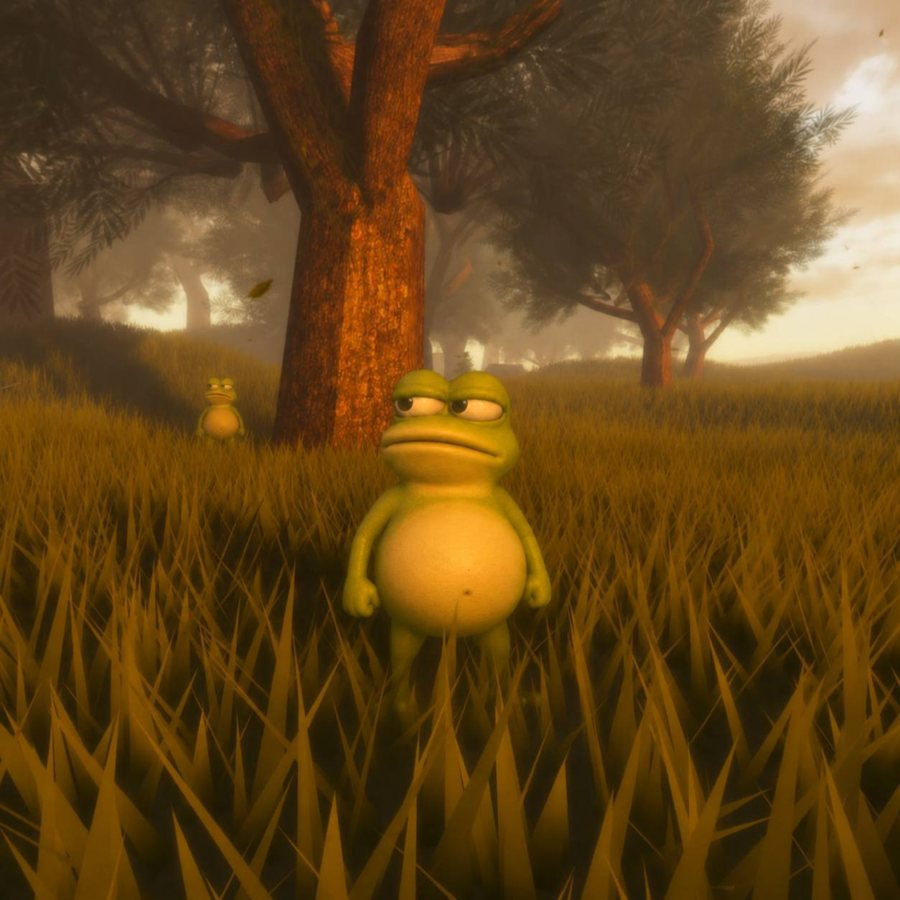
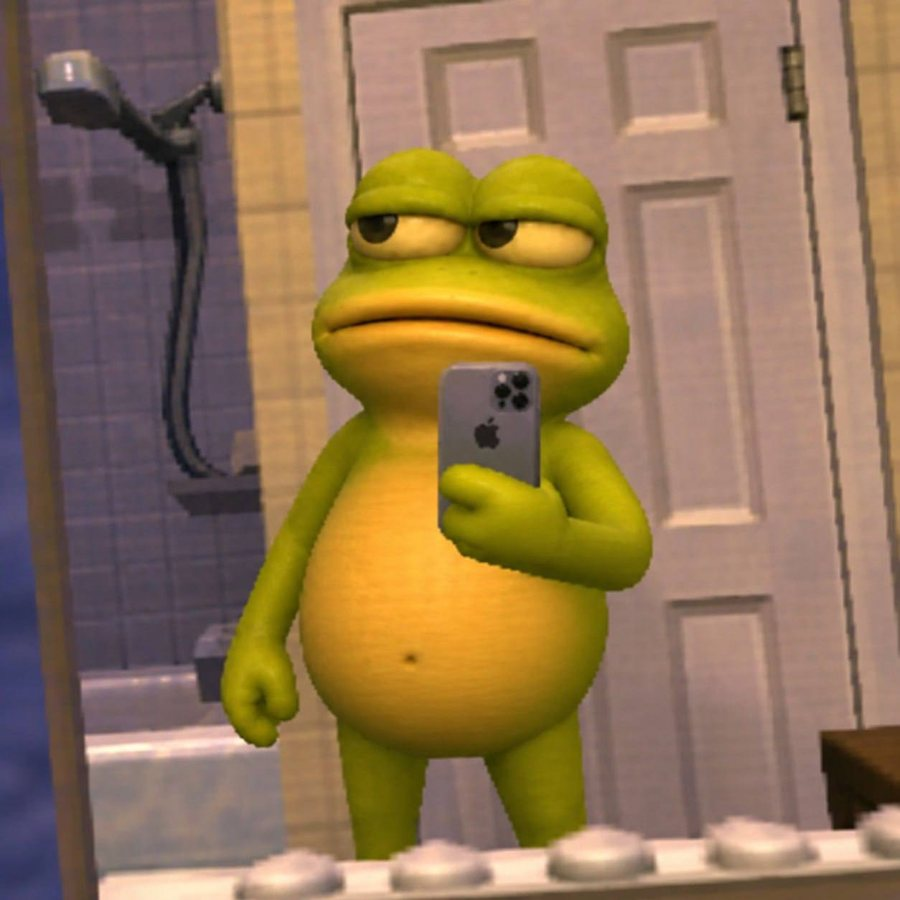

A frog who’s been in crypto for too long.
He could leave. But that means getting a real job. So he stays.
FRONK is a frog who’s been in crypto for too long.
The market is completely fucked. Everything is red. His portfolio keeps dropping. Nothing is going right.
He could leave, but that means getting a real job.
And FRONK doesn’t want that.
So he stays.█

Not because he’s bullish. Not because he thinks the market will recover. He just… stays.
